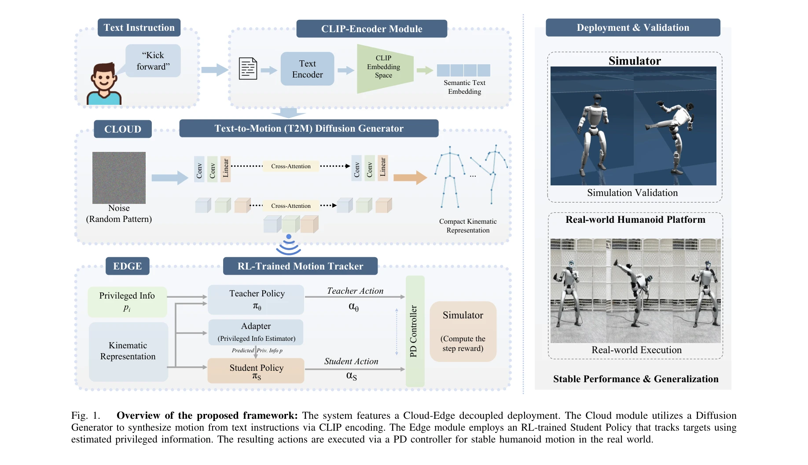

저자: Haozhe Jia, Jianfei Song, Yuan Zhang, Honglei Jin, Youcheng Fan, Wenshuo Chen, Wei Zhang, Yutao Yue | 날짜: 2026-03-17 | URL: https://arxiv.org/abs/2603.16188

Fig. 1.
ECHO는 자연어 명령으로 휴머노이드 로봇을 제어하는 엣지-클라우드 프레임워크로, 클라우드의 diffusion 기반 text-to-motion 생성기와 엣지의 RL 트래커를 로봇 네이티브 38차원 표현으로 연결하여 실시간 폐루프 실행을 실현한다.
Fig. 1.
Fig. 1.
총평: ECHO는 생성과 실행의 명확한 분리, robot-native 표현 설계, 실세계 배포 달성을 통해 언어-기반 휴머노이드 제어 분야에서 modularity와 deployability의 새로운 기준을 제시하는 의미 있는 연구이다.